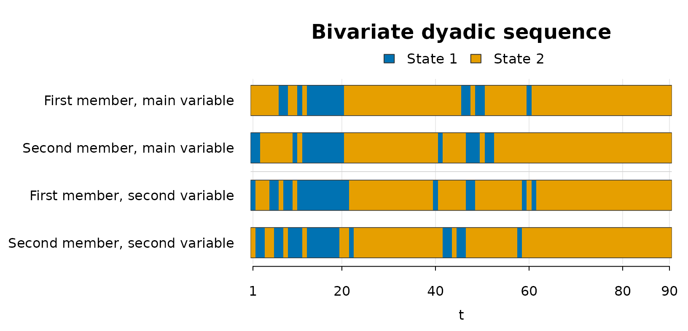

Overview
This vignette shows the bivariate workflow implemented in
dyadicMarkov. In the bivariate setting, two categorical
variables are observed repeatedly for the two members of a dyad. The
bivariate method follows the global-and-local procedure described in
Böllenrücher et al. (in press).
The bivariate method uses matrix codes to identify the local dependence patterns. Partial bivariate patterns are denoted B1–B3, while complete bivariate patterns are denoted C, D1–D4, and E1–E4. When the global step identifies a univariate case, the A-family codes described in the univariate workflow apply. The pattern nomenclature is summarized in Table 2 of Böllenrücher et al. (in press).
The current bivariate workflow supports binary variables
(states = 2).
The example uses the data set dyadic_bivariate_example
included in the package. The data are synthetic and are used only to
illustrate the required input structure and the package workflow.
Although the data are synthetic, the four columns can be read like
real repeated observations from a dyad. For example, V1
could represent one coded behavior or response and V2 a
second behavior or response observed at the same measurement occasions.
The columns FM_V1 and SM_V1 describe the two
members on the main variable, while FM_V2 and
SM_V2 describe the same two members on the second
variable.
Data
The example data set dyadic_bivariate_example contains
two categorical variables for the first member and the second member of
a dyad. Each row corresponds to one measurement occasion.
utils::data("dyadic_bivariate_example", package = "dyadicMarkov")
head(dyadic_bivariate_example)
#> time FM_V1 SM_V1 FM_V2 SM_V2
#> 1 1 2 1 1 2
#> 2 2 2 1 2 1
#> 3 3 2 2 2 1
#> 4 4 2 2 2 2
#> 5 5 2 2 1 2
#> 6 6 2 2 1 1
dim(dyadic_bivariate_example)
#> [1] 90 5The four chains are first-member and second-member sequences for the
main variable (V1) and the second variable
(V2).
Empirical bivariate transition counts
countEmpBivariate() computes the empirical transition
counts for the first member on the main variable from the four observed
sequences.
For states = 2, the resulting matrix has 16 rows
corresponding to the possible previous-state combinations of both
members on both variables. With four binary lagged components, there are
\(2^4 = 16\) such combinations. The two
columns correspond to the possible next states of the first member on
the main variable.
The returned dyadic_counts object retains ordinary
matrix behavior and provides print(),
summary(), and utils::toLatex() methods. The
summary() method reports information including the matrix
dimensions, total count, and row sums, while
utils::toLatex(emp_bi) produces a LaTeX representation for
reports or manuscripts.
emp_bi <- dyadicMarkov::countEmpBivariate(
chainFM_V1 = dyadic_bivariate_example$FM_V1,
chainSM_V1 = dyadic_bivariate_example$SM_V1,
chainFM_V2 = dyadic_bivariate_example$FM_V2,
chainSM_V2 = dyadic_bivariate_example$SM_V2,
states = 2L
)
print(emp_bi)
#> next_1 next_2
#> mainFM1_mainSM1_secondFM1_secondSM1 7 0
#> mainFM1_mainSM1_secondFM1_secondSM2 0 2
#> mainFM1_mainSM1_secondFM2_secondSM1 0 0
#> mainFM1_mainSM1_secondFM2_secondSM2 1 0
#> mainFM1_mainSM2_secondFM1_secondSM1 0 1
#> mainFM1_mainSM2_secondFM1_secondSM2 0 1
#> mainFM1_mainSM2_secondFM2_secondSM1 2 0
#> mainFM1_mainSM2_secondFM2_secondSM2 0 2
#> mainFM2_mainSM1_secondFM1_secondSM1 0 0
#> mainFM2_mainSM1_secondFM1_secondSM2 2 1
#> mainFM2_mainSM1_secondFM2_secondSM1 1 1
#> mainFM2_mainSM1_secondFM2_secondSM2 0 3
#> mainFM2_mainSM2_secondFM1_secondSM1 1 1
#> mainFM2_mainSM2_secondFM1_secondSM2 1 4
#> mainFM2_mainSM2_secondFM2_secondSM1 1 5
#> mainFM2_mainSM2_secondFM2_secondSM2 0 52
summary(emp_bi)
#> $object_type
#> [1] "empirical transition counts"
#>
#> $object_class
#> [1] "dyadic_counts" "matrix" "array"
#>
#> $storage_mode
#> [1] "integer"
#>
#> $dimensions
#> [1] 16 2
#>
#> $row_names
#> [1] "mainFM1_mainSM1_secondFM1_secondSM1" "mainFM1_mainSM1_secondFM1_secondSM2"
#> [3] "mainFM1_mainSM1_secondFM2_secondSM1" "mainFM1_mainSM1_secondFM2_secondSM2"
#> [5] "mainFM1_mainSM2_secondFM1_secondSM1" "mainFM1_mainSM2_secondFM1_secondSM2"
#> [7] "mainFM1_mainSM2_secondFM2_secondSM1" "mainFM1_mainSM2_secondFM2_secondSM2"
#> [9] "mainFM2_mainSM1_secondFM1_secondSM1" "mainFM2_mainSM1_secondFM1_secondSM2"
#> [11] "mainFM2_mainSM1_secondFM2_secondSM1" "mainFM2_mainSM1_secondFM2_secondSM2"
#> [13] "mainFM2_mainSM2_secondFM1_secondSM1" "mainFM2_mainSM2_secondFM1_secondSM2"
#> [15] "mainFM2_mainSM2_secondFM2_secondSM1" "mainFM2_mainSM2_secondFM2_secondSM2"
#>
#> $column_names
#> [1] "next_1" "next_2"
#>
#> $total_count
#> [1] 89
#>
#> $row_sums
#> mainFM1_mainSM1_secondFM1_secondSM1 mainFM1_mainSM1_secondFM1_secondSM2
#> 7 2
#> mainFM1_mainSM1_secondFM2_secondSM1 mainFM1_mainSM1_secondFM2_secondSM2
#> 0 1
#> mainFM1_mainSM2_secondFM1_secondSM1 mainFM1_mainSM2_secondFM1_secondSM2
#> 1 1
#> mainFM1_mainSM2_secondFM2_secondSM1 mainFM1_mainSM2_secondFM2_secondSM2
#> 2 2
#> mainFM2_mainSM1_secondFM1_secondSM1 mainFM2_mainSM1_secondFM1_secondSM2
#> 0 3
#> mainFM2_mainSM1_secondFM2_secondSM1 mainFM2_mainSM1_secondFM2_secondSM2
#> 2 3
#> mainFM2_mainSM2_secondFM1_secondSM1 mainFM2_mainSM2_secondFM1_secondSM2
#> 2 5
#> mainFM2_mainSM2_secondFM2_secondSM1 mainFM2_mainSM2_secondFM2_secondSM2
#> 6 52
#>
#> attr(,"class")
#> [1] "summary_dyadic_counts" "list"Global bivariate case
bivariateCase() performs the global step of the
bivariate method. The global approach compares nested models within the
Likelihood-Ratio Test (LRT) framework. The function performs two
comparisons involving the actor-partner pattern A1 and the partial
actor-partner pattern B1. dyadicMarkov evaluates these
comparisons using Pearson’s chi-squared statistic, \(X^2 = \sum (O-E)^2/E\), to classify the
analyzed sequence as a trivial, univariate, partial bivariate, or
complete bivariate case.
The returned dyadic_case object provides
print(), summary(), and plot()
methods. The printed output gives the identified global case,
summary() reports the test results and decisions at the
specified significance level, and plot() displays the
observed categorical sequences. Individual components can also be
accessed directly through the list-like object, including
case_bi$case.
case_bi <- dyadicMarkov::bivariateCase(emp_bi, alpha = 0.05)
print(case_bi)
#> Bivariate dyadic case
#> Case: complete
#> Alpha: 0.05
summary(case_bi)
#> Bivariate case summary
#> Case: complete
#> Alpha: 0.05
#>
#> Global comparisons evaluated with Pearson Chi-squared
#>
#> Model Chi-squared df p-value Decision
#> Main-variable-only model (A1) 35.6 12 <0.001 Rejected
#> Second-variable-only model (B1) 72.9 12 <0.001 Rejected
plot(case_bi)
This example is identified as a complete bivariate case. The appropriate local step is therefore to compare complete bivariate candidate patterns.
Local pattern identification for a complete case
For a complete bivariate case, completePattern()
computes the G-squared deviance, \(G^2 = 2\sum
O\log(O/E)\), for each complete bivariate candidate structure. It
then calculates \(AIC = G^2 + 2k\) and
selects the candidate with the smallest AIC.
The returned dyadic_pattern object provides
print(), summary(), and plot()
methods. The printed output gives the selected pattern,
summary() reports the candidate comparison, and
plot() displays the observed categorical sequences.
Individual components such as complete_bi$pattern and
complete_bi$aic can also be accessed directly.
complete_bi <- dyadicMarkov::completePattern(emp_bi)
print(complete_bi)
#> Dyadic interaction pattern
#> Pattern: actor only on the main, actor-partner on the second (D2)
summary(complete_bi)
#> Dyadic interaction pattern summary
#> Selected pattern: actor only on the main, actor-partner on the second (D2)
#>
#> AIC candidate comparison
#>
#> Matrix AIC Delta AIC Selected
#> C 32 3.57
#> D1 30 1.61
#> D2 28.4 0 Yes
#> D3 33.3 4.91
#> D4 38.6 10.2
#> E1 30.6 2.13
#> E2 42.9 14.5
#> E3 36.5 8.05
#> E4 40.6 12.1
plot(complete_bi)
In this example, the selected complete bivariate pattern is
D2, labelled by the package as actor only on the main,
actor-partner on the second.
Repeating the analysis from each perspective
Each bivariate analysis is defined from a particular member and variable perspective. The sequence supplied as the first member is the sequence being analyzed, while the second member supplies the partner sequence. Likewise, one variable is treated as the main variable and the other as the second variable.
Swapping the two members changes the member perspective, while swapping the two variables changes which variable is treated as the main variable. The workflow can therefore be repeated for each combination of analyzed member and main variable. These are distinct analyses and may lead to different global cases and local patterns.
For compactness, the following vignette-local helper applies the
exported functions in sequence. Like completePattern(),
partialPattern() returns a dyadic_pattern
object providing print(), summary(), and
plot() methods. analyze_bivariate() is defined
only for this vignette and is not part of the package API.
analyze_bivariate <- function(label, fm_v1, sm_v1, fm_v2, sm_v2) {
emp <- dyadicMarkov::countEmpBivariate(
chainFM_V1 = fm_v1,
chainSM_V1 = sm_v1,
chainFM_V2 = fm_v2,
chainSM_V2 = sm_v2,
states = 2L
)
case <- dyadicMarkov::bivariateCase(emp, alpha = 0.05)
cat("\n", label, "\n", sep = "")
print(case)
if (identical(case$case, "complete")) {
print(dyadicMarkov::completePattern(emp))
}
if (identical(case$case, "partial")) {
print(dyadicMarkov::partialPattern(emp))
}
if (identical(case$case, "univariate")) {
print(dyadicMarkov::univariatePattern(fm_v1, sm_v1, states = 2L, alpha = 0.05))
}
}
d <- dyadic_bivariate_example
analyze_bivariate(
"FM_V1 as analyzed sequence, V1 as main variable",
d$FM_V1, d$SM_V1, d$FM_V2, d$SM_V2
)
#>
#> FM_V1 as analyzed sequence, V1 as main variable
#> Bivariate dyadic case
#> Case: complete
#> Alpha: 0.05
#> Dyadic interaction pattern
#> Pattern: actor only on the main, actor-partner on the second (D2)
analyze_bivariate(
"SM_V1 as analyzed sequence, V1 as main variable",
d$SM_V1, d$FM_V1, d$SM_V2, d$FM_V2
)
#>
#> SM_V1 as analyzed sequence, V1 as main variable
#> Bivariate dyadic case
#> Case: complete
#> Alpha: 0.05
#> Dyadic interaction pattern
#> Pattern: actor-partner on the main, partner only on the second (D3)
analyze_bivariate(
"FM_V2 as analyzed sequence, V2 as main variable",
d$FM_V2, d$SM_V2, d$FM_V1, d$SM_V1
)
#>
#> FM_V2 as analyzed sequence, V2 as main variable
#> Bivariate dyadic case
#> Case: partial
#> Alpha: 0.05
#> Dyadic interaction pattern
#> Pattern: partial actor only (B2)
analyze_bivariate(
"SM_V2 as analyzed sequence, V2 as main variable",
d$SM_V2, d$FM_V2, d$SM_V1, d$FM_V1
)
#>
#> SM_V2 as analyzed sequence, V2 as main variable
#> Bivariate dyadic case
#> Case: univariate
#> Alpha: 0.05
#> Dyadic interaction pattern
#> Pattern: APM (A1)
#> Alpha: 0.05
#> States: 2For this example, analyzing the four sequences in turn illustrates
three branches of the procedure: complete bivariate cases when
FM_V1 and SM_V1 are analyzed, a partial
bivariate case for FM_V2, and a univariate case for
SM_V2.
Reading the global and local steps together
The global and local steps use different statistics.
bivariateCase() performs the global comparisons using
Pearson’s chi-squared statistic, \(X^2\), whereas
partialPattern() and completePattern() use the
G-squared deviance, \(G^2\), to
calculate candidate AIC values.
The global result determines the next step. A trivial
case requires no local pattern selection. A univariate case
is analyzed with univariatePattern() using the two member
sequences of the current main variable. A partial case
proceeds to partialPattern(), and a complete
case proceeds to completePattern().
For complementary visualization and clustering of dyadic longitudinal sequences, see Bollenrücher et al. (2024).